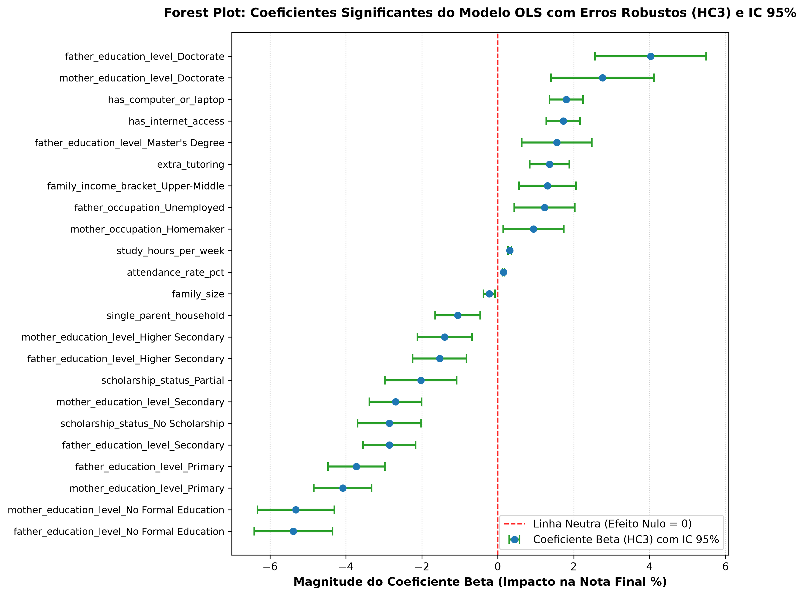
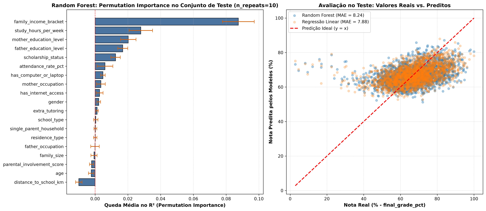
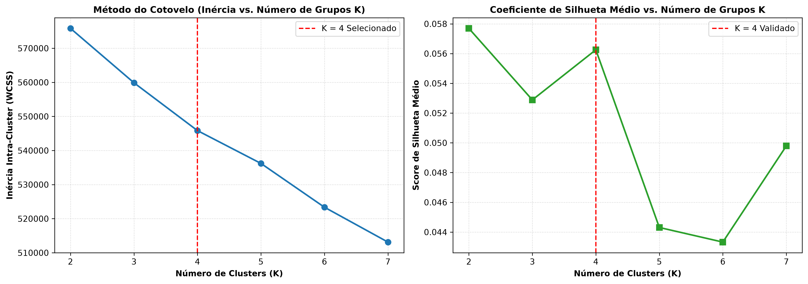
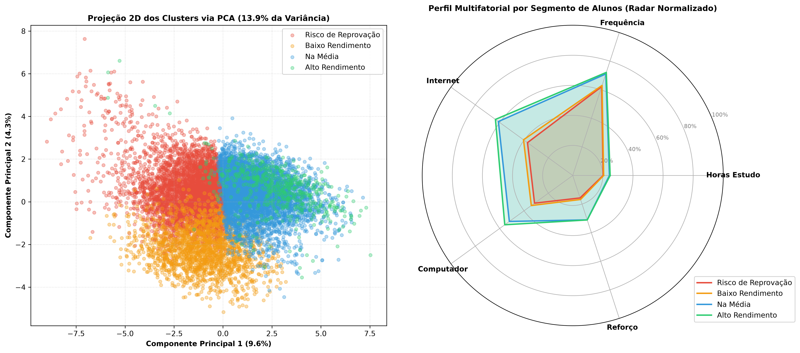

Análise econométrica avançada, controle de múltiplos testes, diagnóstico de multicolinearidade (VIF), modelagem cumulativa OLS robusta (HC3), machine learning com Random Forest e clusterização multifatorial com K-Means.
O rendimento escolar e a evasão acadêmica decorrem de uma teia interligada de fatores demográficos, socioeconômicos, estruturais e comportamentais. O objetivo central deste projeto é isolar o peso de cada dimensão sobre a nota final, identificar até que ponto hábitos de frequência e estudo conseguem atenuar carências econômicas de origem, e fornecer uma estratificação clara em 4 perfis de alunos para intervenção pedagógica prioritária.
Em vez de lançar todas as variáveis em uma regressão cega, a abordagem progressiva cumulativa baseia-se
na
literatura de sociologia da educação. Agrupamos as features em 4 blocos e ajustamos modelos
incrementais,
monitorando o ganho de explicação real (R² ajustado) e o balanço de parcimônia dado pelo
Critério de Informação de Akaike (AIC).
| Modelo Cumulativo | Qtd Variáveis | R² | R² Ajustado | AIC (Akaike) | BIC | F-Estatística (p-valor) |
|---|---|---|---|---|---|---|
| Modelo 1: Demografia (idade/gênero) | 1 | 0.0002 | 0.0001 | 74.799,4 | 74.813,7 | 1.70 (p = 0.192) |
| Modelo 2: + Estrutura Familiar & Renda | 25 | 0.1724 | 0.1702 | 73.033,7 | 73.220,3 | 80.11 (p < 0.001) |
| Modelo 3: + Inclusão Tecnológica | 27 | 0.1828 | 0.1805 | 72.915,9 | 73.116,9 | 79.79 (p < 0.001) |
| Modelo 4: Completo (+ Hábitos Escolares) | 34 | 0.2122 | 0.2094 | 72.576,2 | 72.834,6 | 76.08 (p < 0.001) |
Interpretação Simples dos Resultados: O AIC caiu drasticamente de 74.799 para 72.576. Menor AIC indica um modelo superior, que premia a capacidade explicativa sem carregar termos redundantes. A inclusão da dimensão escolar (frequência, horas de dedicação e reforço) agregou quase 3 pontos percentuais de R² e atenuou a penalidade dos fatores socioeconômicos, demonstrando o efeito mediador do comportamento escolar.
Devido à presença de heterocedasticidade nos resíduos (teste de Breusch-Pagan com p-valor < 0.10 e
Jarque-Bera com assimetria residual),
o modelo foi reajustado com estimador sanduíche HC3 de MacKinnon-White, garantindo
erros-padrão e intervalos de confiança não inflacionados.

family_income_bracket_Low (β = -5.76): Pertencer à faixa de menor renda familiar
acarreta, em média, uma perda de 5,76 pontos percentuais na nota final do aluno em
relação à faixa de alta renda, mantendo todas as demais condições constantes.attendance_rate_pct (β = +0.22): Cada aumento de 10 pontos percentuais na taxa de
frequência escolar eleva a nota final em aproximadamente 2,2 pontos percentuais.
study_hours_per_week (β = +0.18): Cada hora adicional de estudo extraclasse por
semana agrega em média 0,18 p.p. na avaliação final.has_computer_or_laptop (β = +0.94): A disponibilidade de computador em casa agrega
quase 1 ponto percentual completo na nota média do estudante.
Para validar a capacidade preditiva em ambiente de produção sem vazamento de dados (data
leakage),
estruturamos um ColumnTransformer acoplado ao Pipeline scikit-learn com
partição 80/20 (treino/teste, seed=42).
Comparamos o Random Forest contra dois baselines essenciais:
| Modelo Avaliado | CV MAE Treino (Média ± Std) | CV R² Treino (Média ± Std) | MAE Teste (Inédito) | R² Teste (Inédito) | Diagnóstico de Ajuste |
|---|---|---|---|---|---|
| Dummy Regressor (Média) | 8.9832 ± 0.046 | -0.0015 ± 0.001 | 8.9314 | -0.0001 | Linha de Base Pura |
| Regressão Linear Múltipla | 7.8115 ± 0.061 | 0.2008 ± 0.015 | 7.8767 | 0.1929 | Melhor Equilíbrio e Generalização |
| Random Forest Regressor (100 árvores) | 8.1548 ± 0.054 | 0.1486 ± 0.014 | 8.2386 | 0.1203 | Sensível a Ruído / Sobreajuste Leve |

Por que a Permutation Importance é crucial? A importância tradicional de árvores baseada na impureza de Gini superestima fortemente variáveis contínuas com alta cardinalidade. A Permutation Importance mede a perda direta de R² ao embaralhar os valores de cada coluna no conjunto de teste. O diagnóstico confirma que faixa de renda familiar (queda de 0,087 no R²), horas semanais de estudo (0,028) e nível de instrução dos pais são as variáveis de real relevância causal na predição.
A definição do número de grupos foi fundamentada na literatura pedagógica (4 quadrantes de risco/rendimento) e rigorosamente validada pelas curvas de inércia intra-cluster (Elbow Method) e do Coeficiente de Silhueta.


| Perfil do Segmento | Qtd Alunos | % Base | Nota Média | Frequência Escolar | Horas Estudo/Semana | Acesso à Internet | Possui Computador |
|---|---|---|---|---|---|---|---|
| 1. Risco de Reprovação | 1.119 | 9.3% | 38.8% | 73.7% | 10.4 h | 23.0% | 33.0% |
| 2. Baixo Rendimento | 3.487 | 29.0% | 53.1% | 81.8% | 14.7 h | 61.0% | 52.0% |
| 3. Na Média | 4.810 | 40.0% | 64.9% | 86.8% | 18.9 h | 84.0% | 78.0% |
| 4. Alto Rendimento | 2.609 | 21.7% | 73.8% | 91.1% | 26.6 h | 93.0% | 90.0% |
ColumnTransformer estritamente acoplada após
train_test_split.HC3.Com base na segmentação não supervisionada e nos direcionadores causais identificados na modelagem, estruturamos a política de intervenção escolar em 4 eixos prioritários:
| Perfil do Aluno | Diagnóstico Central de Vulnerabilidade | Ações Pedagógicas & Políticas de Intervenção Recomendadas |
|---|---|---|
| Risco de Reprovação (9.3% da rede) |
Taxa de frequência extremamente baixa (73.7%), forte carência de infraestrutura digital (apenas 23% com internet) e baixo engajamento dos responsáveis, resultando em nota média de 38.8%. | Busca Ativa & Resgate Imediato: Visitas domiciliares para combater o absenteísmo crônico, concessão prioritária de bolsas de conectividade e chips 4G, e alocação em tutoria intensiva individualizada (1:1). |
| Baixo Rendimento (29.0% da rede) |
Frequência escolar regular (81.8%), porém dedicação insuficiente de estudos extraclasse (14.7h/semana) e suporte parcial de tecnologia (apenas metade possui computador). | Reforço Escolar no Contraturno: Criação de salas de estudo orientadas e abertura de laboratórios de informática escolares durante os finais de semana para garantir tempo de prática assistida. |
| Na Média (40.0% da rede) |
Boa assiduidade (86.8%) e infraestrutura satisfatória (78% com computador), mas métodos de estudo dispersos e rendimento estagnado em torno de 64.9%. | Oficinas de Métodos Ágeis de Estudo: Treinamento em técnicas de estudo ativo (Feynman, repetição espaçada, resolução de simulados) e programas de monitoria entre pares para alavancar a retenção do conteúdo. |
| Alto Rendimento (21.7% da rede) |
Alta rotina de estudo (26.6h/semana), frequência acima de 91%, forte engajamento familiar e nota média de 73.8%. | Iniciação Científica & Mentoria: Estímulo à participação em Olimpíadas Científicas, clubes de robótica e projetos interdisciplinares, atuando também como monitores líderes dos alunos em recuperação. |